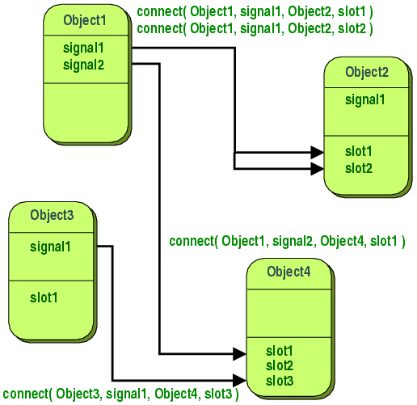

在Qt之中，當某個元件發生狀態改變，而另一個元件想得知其狀態改變，並作出一些相對應行為的話，可以使用Signal與Slot的機制來達到，Signal與Slot機制是Qt與其它框架非常不同的核心特性。
在Qt中，您可以設計物件擁有一些Signal，在特定的情況下，例如狀態改變、使用者的操作事 件發生時，發出（emit）特定的Signal，對於某些Signal有興趣的物件，可以設計一些Slot來接受特定的Signal，並定義相對應的動 作，Signal與Slot之間，可透過QObject的靜態方法connect來連結，Signal與Slot之間的處理是同步的 （Synchronized）。

（圖片取自Qt官方的 Signals and Slots 文件）
使用Signal與Slot，Qt中的物件可以不用知道彼此的存在，但又可以彼此溝通，在Qt中的元件，預設有一些Signal與Slot，例如按鈕元件QPushButton若被按下，會發出clicked()的Signal，您可以將之 連接（connect）至QApplication()的quit()這個Slot，quit()會執行關閉Qt應用程式的動作。
以下的程式實作出上述的行為：
#include <QApplication>
#include <QPushButton>
#include <QFont>
int main(int argc, char *argv[]) {
QApplication app(argc, argv);
QPushButton *btn = new QPushButton("Close");
btn->setWindowTitle("Signal & Slot");
btn->setFont(QFont("Courier", 18, QFont::Bold));
btn->resize(250, 50);
QObject::connect(btn, SIGNAL(clicked()), &app, SLOT(quit()));
btn->show();
return app.exec();
}QPushButton是Qt的按鈕元件，您可以設定按鈕所顯示的文字，或者是使用QFont設定按鈕文字的字型，在這邊設定字型為Courier、大小18、黑體字。
QObject是Qt中許多類別的父類別，是Qt物件模型的核心。connect()方法的第一個參數是發出Signal的物件之位址，第三個參數是對Signal有興趣的物件之位址。SIGNAL ()與SLOT()為巨集函式，是語法的一部份，所傳入的Signal或Slot為沒有參數名稱的函式簽名（function signature），在上面的例子中，如果按鈕btn被按下，會發出clicked()的Signal，而處理的Slot為應用程式app的quit ()函式。
可以看到，程式中btn與app並不知道彼此的存在，而是藉由connect()連接Signal與Slot，這降低了物件之間的耦合度。
在建置這個程式並執行之後，若按下視窗中的按鈕，將會直接關閉視窗，視窗畫面如下所示：
在 Qt 的線上文件 中，可以於API Reference中，查詢各個類別的Signal或Slot及其作用。